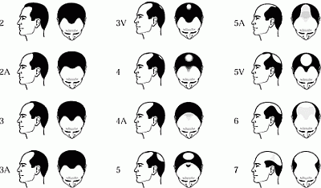

DISCLAIMER
The information contained herein is to be used for educational purposes only.
The author is not a medical professional, and this information should not be
considered medical advice. This information should NOT be used to replace
consultation with or treatment by a trained medical professional. The listing
of a medication herein does not imply endorsement by the author.
SECTIONS
Hair and hair growth: the basics
Causes of AGA/MPB: DHT and heredity
Finasteride/Propecia:5-Alpha Reductase Inhibitor
Dutasteride: 5-Alpha Reductase Inhibitor
A note about androgen receptor inhibitors and anti-androgens
Tips for finding a good surgeon
Follicular Unit Transplant (FUT) Surgery
Buyer beware: Older/outmoded surgical procedures in hair restoration
Introduction
For many men, losing one's hair can be a disheartening experience, and trans men are no different in this regard. With the onset of testosterone therapy comes the distinct possibility of male pattern hair loss (further defined below). While a great number of men accept hair loss, others try to combat it. Fortunately for them, there have been significant advances in recent years with hair loss treatment drugs and surgical options.
This section is devoted to understanding the facts and myths around hair growth and male pattern hair loss, as well as providing a basic guide to current treatment options.
Hair and hair growth: the basics
In order to better understand hair loss, it can be helpful to have a basic understanding of hair growth patterns and terminology.
Each strand (or "shaft") of hair is made up of a strong structural protein called "keratin;" this is the same material that makes up our fingernails and the outer layer of our skin. Hair that is very fine, short, and usually light in color (such as "peach fuzz" on the face) is called "vellus hair." Healthy head hair, as well as beard, armpit, and pubic hair, is called "terminal hair."
A shaft of hair has three basic layers: the "medulla," the "cortex," and the "cuticle." The medulla is the innermost core of the hair, and it is only present in thick hairs such as scalp hair. The cortex is the middle layer which provides strength, color, texture, and elasticity. The outermost layer is called the cuticle; it is colorless and forms a tightly-packed layer of overlapping scales to protect the hair from the environment.
Each shaft of hair grows out of a small sac within the skin called a "follicle." A follicle is a like a small canal with a bulbous area at the bottom called the "dermal papilla," from which the hair fiber is produced. Very small blood vessels nourish the dermal papilla during hair growth. The follicle is also connected to a "sebaceous gland" (or oil-producing gland), as well as a tiny bundle of muscle fibers called the "arrector pilli."
A normal hair growth cycle can be broken down into three phases: the "anagen phase," the "catagen phase," and the "telogen phase."
The anagen phase is a hair's growth phase. Approximately 85-90% of hairs are in the anagen phase at any given time. For scalp hair, this growth phase can vary from 2 to 6 years, during which the hairs grow approximately 10cm per year.
At the end of the anagen phase, a hair enters the catagen phase. This is a transitional phase that lasts about one or two weeks, during which time the hair follicle shrinks to about 1/6 of its normal length. The lower part of the follicle is destroyed and the dermal papilla breaks away to rest below the follicle.
After the catagen phase comes the telogen phase, a resting period. The telogen phase typically lasts about 5 to 6 weeks. During this time, the hair stays attached to the follicle but does not grow. Approximately 10-15% of hairs are resting at any given time. At the end of the telogen phase, the follicle once again begins the anagen phase. The dermal papilla, which had been resting since the the end of the catagen phase, rejoins the base of the follicle and a new hair begins to form. If the old hair has not already shed, the new hair will push it out.
Each hair will pass through these phases independent of other hairs nearby. The average scalp contains about 100,000 hairs, and it is typical to shed between 50 to 100 hairs from the head each day.
Male pattern hair loss, defined below, is caused by the body's failure to produce new hairs on certain areas of the scalp. Therefore, the onset of male pattern baldness is a gradual process, and not typically marked by sudden or excessive hair loss.
Male Pattern Baldness (MPB)
The general medical term for all types of hair loss is "alopecia." There are many different factors that can cause alopecia, including genetics, hormonal influences, illness, or environmental factors.
"Androgenetic alopecia" (AGA), also sometimes called "androgenic alopecia," is by far the most common form of hair loss in both men and women, though the patterns of hair loss seen with AGA tend to differ across gender lines. Women with AGA tend to show a diffuse thinning of the hair on all areas of the scalp (this is often termed "female pattern baldness" or FPB), while men tend to show distinctive patterns of hair loss around the temples, the crown (the top of the scalp), and/or a "receding hairline" from the forehead working backward (this is often termed "male pattern baldness" or MPB). The Norwood Male Pattern Hair Loss Chart (shown below) shows typical manifestations of MBP.

Trans men on testosterone therapy are at risk for male pattern baldness just as other men are. Whether any man will experience MPB appears to be dependent on the factors described below.
Causes of AGA/MPB: DHT and Heredity
While the exact causes of androgenetic alopecia are not fully understood, two major factors that appear to be involved in AGA are:
1. the presence and action of dihydrotestosterone (DHT), a potent androgen, in the hair follicles, and
2. a seemingly inherited sensitivity to DHT in the affected hair follicles.
"Dihydrotestosterone" (DHT) is a naturally occurring hormone and a potent derivative of testosterone (T). It is recognized that DHT plays an important role in the development of the male fetus, as well as in male pubescent development. DHT is able to bind to the same cellular androgen receptors that T does. While it is known that both T and DHT play important roles in various biological functions in the human male, it has not yet been possible to determine which of the two hormones is the primary or sole initiator of certain biological responses.
Regarding the topic of hair loss, DHT appears to play a major role in the process of androgenetic alopecia.
In the body, T is converted into DHT with the aid of an enzyme called "5-alpha reductase" (5aR). Due to a slight variance in its chemical structure, there are two types of 5-alpha reductase enzymes, aptly named "type I 5-alpha reductase" and "type II 5-alpha reductase." Type I 5aR has been found in various parts of the body including the sebaceous glands, the sweat glands, the skin, and the hair follicles. Type II 5aR has been found in the sebaceous ducts, the hair follicles, the prostate, the liver, and the testicles. Both types of 5aR can combine with T to form DHT.
In the hair follicles, 5-alpha reductase combines with testosterone to produce DHT. DHT then goes on to bind to androgen receptors in the follicle itself. (For a more in-depth discussion of androgens, hormones, and receptors, see the section "Hormones and the Body: A Brief Overview.")
The DHT production and binding process described above occurs even in men who are not losing their hair. Though the exact causation is not fully understood, problems with male pattern hair loss seem to arise if the follicles themselves have a predisposed sensitivity (probably inherited) to certain levels of DHT over time.
If certain follicles are indeed sensitive to DHT, they will undergo a gradual shrinking process. Through each new cycle of hair growth, the follicle will continue to degrade, becoming shorter and thinner than in the previous cycle. As a result, the hair that grows from the follicle will become progressively finer and more wispy, until the follicle has miniaturized to the point where it can no longer grow a viable hair.
The hairs that tend to be most sensitive to this degradation process in men are the hairs around the temples, forehead, and crown (as shown previously in the Norwood Chart). The hair on the back and sides of the head seems to be less prone to AGA; thus the familiar "horseshoe" pattern of hair around the head seen in many men who are balding.
The degradation process in the effected follicles that is seen in AGA typically takes place fairly slowly, over a course of years. Hair loss that occurs rapidly or in patches, that involves the breaking of hair shafts, diffuse shedding, or is associated with redness, scaling, or pain could be caused by conditions other than AGA and should be checked by a dermatologist in order to be treated properly.
A note about heredity: Mom, Dad, or both?
While it is a popular belief that a man should look to his mother's side of the family for inherited hair loss, this may not be the most accurate indicator of male pattern baldness. Current medical science has not yet determined exactly how or where the tendency toward MPB arises. It is believed to be genetic, but the genes responsible for MPB have not yet been mapped, and the actual expression of an inherited trait can be dependant on a variety of factors. It is possible that the genetic predisposition for MPB could be inherited from either side of your family.
Some have hypothesized that the tendency toward MPB resides on the "X chromosome" of what are called the "sex chromosomes" (again, this is an idea that has yet to be proven). The sex chromosomes are a pair of chromosomes, usually designated "X" or "Y," that combine to determine the sex and sex-linked characteristics of an individual, with XX usually resulting in a female and XY usually resulting in a male. There are other sex chromosome combinations produced in humans, including X, XXX, XXXX, XXY, and XXXY.
In men born with an XY chromosome pair, the X chromosome is passed by the mother and the Y by the father. Presumably, a large portion of trans men are born with an XX chromosome set, where one X is passed from the mother and the other from the father. Therefore, if the tendency toward male pattern baldness does happen to be linked to the X chromosome, many trans guys would have to consider both sides of the family as potentially passing on the trait.
Treatments for MPB
The most effective treatment options for male pattern hair loss to date have focused on interrupting the production of DHT in the scalp, and/or stimulating the growth process in the hair follicle itself.
There are currently only two FDA-approved drug treatments for hair loss. (The FDA is the U.S. Food and Drug Administration, a governmental organization responsible for assuring the safety, efficacy, and security of drugs, biological products, medical devices, our nation’s food supply, cosmetics, and products that emit radiation.) Those two treatments are Finasteride and Minoxidil, and they are further described below. A third promising hair loss treatment called Dutasteride is currently being tested for the treatment of hair loss, and thus it is often included in hair loss information resources. It is also described below.
Though there are only two FDA-approved treatments for hair loss to date, there are numerous hair loss products on the market, including a large number of herbal and vitamin treatments. It is not within the scope of this section to provide information about the effectiveness of various herbal or vitamin treatments for MPB, though some practical considerations about herbal/vitamin treatment options are discussed below ("A note about herbal/vitamin treatments"). Consumers should beware that many products claiming to stop hair loss or regrow hair have not been proven to work in clinical settings, and indeed don't work. When in doubt about any particular product, be sure to check the list of active ingredients and discuss them with an impartial doctor or dermatologist.
Male pattern hair loss tends to happen over the course of years. If you do choose to try to treat your hair loss, it is a good idea to start early, in order to slow or prevent as much loss as possible. At the first signs of hair loss, speak to your doctor or dermatologist to discuss your options.
Acceptance
The least expensive and easiest "treatment" for male pattern baldness is acceptance! And those who accept their hair loss will certainly be in good company-- by age 35, about two-thirds of American men will experience some appreciable degree of hair loss, and by age 50 over three-quarters of men will have significantly thinning hair.Your hairstyle will probably need to change as your hairline changes. Many guys with significant hair loss opt for very short styles, including shaved or nearly shaved heads. Wearing facial hair can also augment the looks of a man with MPB. You should speak to your barber about the styling options that will look best with your hairline, head/face shape, and facial hair.
Finasteride/Propecia: 5-Alpha Reductase Inhibitor
The drug Finasteride was initially prescribed to men in the United States under the drug name "Proscar" to treat enlarged prostate glands. A side effect of Proscar was that it caused hair growth in a significant number of the patients. It is now marketed in the U.S. as "Propecia" to treat mild to moderate hair loss in men. It is widely considered the most effective treatment for male pattern hair loss available to date, and it is FDA-approved for that purpose.Finasteride is a type II 5-alpha reductase inhibitor. Type II 5-alpha reductase (type II 5aR) is an enzyme that is responsible for converting testosterone into DHT (described in detail above). Finasteride blocks the action of type II 5aR, thereby inhibiting DHT production in the hair follicles. A daily dose of 1mg can effectively lower DHT levels by as much as 60%.
86% of men who take Finasteride see a stop to the progression of hair loss, and 65% of men who take it experience hair growth in the crown area. It has been shown to effectively treat hair loss on the vertex (top of the head) and the anterior mid-scalp area. There is evidence that Finasteride works in treating receding hair lines at the temples, but it seems to be less effective in that area.
The typical dose for treatment of hair loss is 1mg/day. It may take from 3 to 6 months for the patient to see an effect. In order to retain the benefits of the medication, it must be taken indefinitely. If a patient stops taking Finasteride, DHT levels will rise in the hair follicles, and hair loss is likely to resume. It is only available by a prescription from your doctor.
Precautions
Finasteride should not be taken by women who are pregnant or who may become pregnant, nor should women handle broken tablets of this medication, as it can be absorbed through the skin. The reason for this precaution is that Finasteride is known to cause birth defects in developing male fetuses (recall that DHT plays an important role in male fetal development).Unless a trans man has a chance of being pregnant or makes the decision to go off of testosterone in order to become pregnant, Finasteride can be taken daily for the treatment and prevention of male pattern hair loss.
Possible side effects
Possible side effects of Finasteride include decreased libido, breast tissue tenderness or enlargement, skin rash, swelling in the lips, tongue, or face, abdominal pain, back pain, diarrhea, dizziness, or headache. For men born with a functional penis and testes, Finasteride can also cause difficulty in getting or maintaining an erection.
Dutasteride: 5-Alpha Reductase Inhibitor
Dutasteride is similar to Finasteride in that it is also a 5-alpha reductase inhibitor. It is effective in inhibiting both type I and type II 5-alpha reductase, though it is unclear if this provides additional benefits in the treatment of male pattern hair loss.Dutasteride is FDA-approved to treat enlarged prostate glands in men, but it is not yet marketed or approved for treatment of hair loss. Dutasteride is currently being tested for the treatment of MPB, and thus it is often included in hair loss information resources. It is only available by a prescription from your doctor.
Precautions
Dutasteride should not be taken by women who are pregnant or who may become pregnant, nor should women handle broken tablets of this medication, as it can be absorbed through the skin. The reason for this precaution is that Dutasteride is known to cause birth defects in developing male fetuses (recall that DHT plays an important role in male fetal development).Possible side effects
Possible side effects of Dutasteride include decreased libido, decreased amount of semen released during ejaculation, or breast tissue tenderness or enlargement. For men born with a functional penis and testes, Dutasteride can also cause difficulty in getting or maintaining an erection.
Minoxidil/Rogaine
Minoxidil was first used in tablet form as the drug "Loniten," an antihypertensive, to treat high blood pressure. An unexpected side effect of Loniten was that some patients experienced excessive hair growth.As a result, a topical solution of Minoxidil was developed for application directly on the scalp to stimulate hair growth. This product is marketed in the United States as "Rogaine," though it can also be obtained under other names and as a generic. It typically comes in 2% and 5% solution, usually as a lotion or foam. Minoxidil works best at the crown of the head; it is not shown to work quite as well at the front of the head or on the temples, though some users have shown improvement in those areas in clinical trials.
The exact process by which Minoxidil causes its results is not fully understood, but it appears to help slow or reverse the shrinking process of the hair follicles, thus slowing loss and causing some regrowth in some patients. It requires twice-a-day application, and it may take from 3 to 6 months for the patient to see an effect. Topical minoxidil does not require a prescription; it can be purchased over the counter in many drugstores.
Minoxidil is generally not considered as effective as Finasteride in slowing or preventing hair loss due to male pattern baldness. Some men use a combination of both Finasteride and Minoxidil to treat their hair loss.
Possible side effects
Common side effects of Minoxidil include including skin irritation, itch, contact dermatitis, hives, swelling, and sensitivity. Rare side effects include blurred vision, chest pain, decreased libido, difficulty in maintaining an erection, fast or irregular heartbeat, flushing, headache, lightheadedness, numbness or tingling of the hands, feet, or face, or rapid weight gain.
A note about androgen receptor inhibitors and anti-androgens
Drugs or supplements that have anti-androgenic activity are sometimes used for the treatment of hair loss in women, but due to unwanted side effects they are typically not used for hair loss treatment in men. Depending on the drug/supplement in question, they may act to block the binding of DHT to androgen receptors, or may cause a reduction/suppression in overall production of testosterone. Drugs in this category include cyproterone acetate, aldactone/spironolactone, and nizoral/ketoconazole.
For men, the trouble with most hair loss drugs that block the binding of DHT (and T) to cellular receptors is that this effect is usually not localized only to the hair follicles. Thus, the drugs can act as anti-androgens throughout the body, often causing unwanted feminizing effects.
A note about herbal/vitamin treatments
As noted earlier, there are numerous herbal/vitamin hair loss products on the market today; whether and to what extent those products are effective in treating MPB is difficult to say. This is not to imply that vitamin or herbal remedies cannot be effective in treating hair loss-- indeed, some people have had success with such treatments, and some studies exist that indicate successful results for certain substances. However, there is very little regulation around the marketing and sale of herbal and vitamin products, and as such it can be difficult to find accurate, unbiased information about various treatments and their effectiveness.
The loose regulation of herbal/vitamin treatments is largely due to the fact that they are considered by the FDA to be "dietary supplements" rather than "drugs."
According to the FDA, a "drug" is an article that is intended to diagnose, cure, mitigate, treat, or prevent diseases (drugs can be derived from natural/plant sources). Drugs must undergo clinical studies to determine their effectiveness, safety, possible interactions with other substances, and appropriate dosages. The FDA must review these data and authorize a drug's use before it can be marketed. In other words, drug manufacturers must obtain FDA approval by providing convincing evidence that a drug is both safe and effective.
"Dietary supplements" are substances that exist in nature, and include: vitamins and minerals; herbs, botanicals, and other plant-derived substances; amino acids; and concentrates, metabolites, constituents and extracts of these substances. The FDA does not authorize or test dietary supplements, nor does it require the companies that sell such supplements to provide evidence that they are safe and effective.
By the FDA's reasoning, when a company creates a non-natural substance for ingestion (such as a drug), the burden of proof is on the company to prove it is safe because the existence of that substance is attributable specifically to that company. Dietary supplements, however, exist in nature, and their origin cannot be attributed to a specific company. Therefore, the burden of proof is not on the companies selling the supplements, any more than the burden of proof is on a food distributor for proving that potatoes or beans are safe.
Furthermore, drugs are patentable substances, while natural substances are not patentable. The research costs for testing any substance in a clinical setting are incredibly high. Drug companies are able to recoup these costs by their ability to patent the drugs they are testing. Because dietary supplements are not patentable (you cannot patent a substance that already exists in nature), the costs for the research and clinical testing of that substance that are required for FDA approval cannot easily be recouped. Therefore, dietary supplements are rarely given the same kind of rigorous clinical testing that is required for drugs before marketing-- it is simply not cost effective.
Because of this situation, a potential consumer of herbal/vitamin hair loss treatments would be wise to conduct their own research on the product(s) in question before buying. It is best to find the active ingredients in a hair loss remedy and find independent, reputable clinical research and unbiased consumer testimony about the efficacy of those ingredients. It is best to find out how those active ingredients produce their effects (i.e., are they 5-aR inhibitors, are they anti-androgens, etc.), bearing in mind potential side effects of such treatments. You may also wish to discuss the use of supplements with your doctor, as some herbal remedies can have negative drug interactions with other medications or supplements you may already be taking.
Hair restoration surgery
For men who don't get satisfactory results from available drug treatments, who have some money to spare, and who are good surgical candidates, hair restoration surgery may be a viable option.
There have been significant advances in the area of surgical hair restoration since the 1990s. New micro-grafting techniques in the hands of a skilled surgeon can create virtually undetectable new hair lines in men who have varying degrees of hair loss. While this is good news for those considering hair transplant surgery, it is important to note that in order to get optimal results, one must find a surgeon who is proficient in the latest techniques, equipment, and artistry required to create a good hairline.
Finding the right surgeon can be a daunting task, as the field of hair restoration is completely unregulated both within the medical community and by the government. Any licensed physician in the U.S. can legally perform hair transplant surgery without any prior surgical training or accreditation of any kind. Anyone considering hair restoration surgery should understand that though there are some highly-skilled and highly-trained surgeons who specialize in hair transplantation, there are many who are not skilled or trained in the latest techniques. Thus it is important to do your homework as you look for a quality surgeon.
Tips for finding a good surgeon
1. Learn all you can about hair restoration surgery
Before approaching any surgeons, learn as much as you can on the current types of hair restoration surgery available. Learn the basic techniques involved in each type of surgery so that when you begin to speak to potential surgeons, you are able to ask probing and informed questions. Find out which surgeries have become outmoded since the advent of newer surgical techniques, and avoid surgeons who still practice outdated techniques. (Basic descriptions of various surgical procedures, both current and outmoded, are provided below.)2. Find a surgeon who will provide multiple references and before and after photos
Make sure the surgeon(s) you are considering can provide you with at least 10 sets of clear before and after photos taken with the same angle, background, and lighting. Ask to see photos of donor area scars. Request at least six patient references (names and phone numbers) whom you can contact to discuss their experience with the surgeon in question.3. Check the state medical board
Contact your state medical board to see if any complaints have been filed against the surgeon(s) you are considering.4. Ask about the technology, team, and skills being used
If the surgeon practices some variant of "follicular unit transplants" (FUT, further described below), ask him or her questions about the procedure. Specifically, find out how many technicians on the team will work on dissecting follicular units from the donor area, how many of them will be using stereo-microscopes, how much experience the surgical team has with dissecting follicular units, and how long the dissection process will take (i.e., how long will the donor area be handled before the units are grated back into the skin).5. Have a direct consultation with the surgeon who will be performing the transplant
Some of the more splashy hair transplant offices will have you see a "medical consultant" rather than the surgeon during your consultation. The role of these consultants is often to sell you on the procedure; be wary of such approaches.6. Avoid flashy marketing, "infomercials", "bargain" pricing, and unrealistic promises
Be wary of a surgeon who promises major results in only one session. Depending on your degree of hair loss, you may need more than one session for optimal results. Similarly, don't choose a surgeon based on price or marketing alone.
Follicular Unit Transplant (FUT) Surgery
All types of hair restoration surgery share the same goal: to move or transplant hair from DHT-resistant areas of the scalp (such as the back or sides of the head) to the areas of loss, creating a new or improved hairline. The recently developed technique of "follicular unit transplant (FUT)" surgery, however, results in vastly improved results than older surgical methods can provide. Indeed, the advent and development of FUT surgery has rendered a number of older surgical methods nearly obsolete, as they typically are more traumatic to the patient's scalp and produce far less natural-looking results. (A number of older surgical techniques are described below so that the buyer may beware when researching hair restoration surgeons.)
What is follicular unit transplant (FUT) surgery?
In order to understand FUT surgery, it is necessary to start by defining a "follicular unit." A follicular unit is a natural grouping of hair(s) that grow together in the scalp and share the same blood supply. Follicular units typically occur in groups of one, two, or three (and, occasionally, four) hair follicles; the average follicular unit contains about 2.4 hairs.
A follicular unit transplant involves the redistribution of these naturally occurring follicular groupings to the area of hair loss. Currently, there are two methods for transplanting follicular units: "follicular unit transplantation (FUT)" (sometimes also called "follicular unit grafting" or "FUG") and "follicular unit extraction (FUE)." Both methods transplant hairs in follicular unit groupings from a donor area to an area of loss. The difference between the two is the method used to remove the units themselves.
How does FUT/FUE work?
In the method typically called follicular unit transplantation (FUT), a thin strip of hair is removed from the back and/or sides of the scalp (the donor area). The donor area is sewn closed, leaving a small scar that is usually masked by the hair growth above it.
The donor strip is then carefully dissected beneath a binocular stereoscope (a high-powered microscope) into follicular unit grafts of 1-, 2-, 3-, or 4-hair groupings. Excess skin from around each follicular unit is cut away, leaving the smallest possible graft (thus resulting in minimal scarring upon transplantation). The dissection process is usually handled by a surgical team of several people, each working with a stereoscope, so that the donor hair/tissue is kept out of the body for the least amount of time possible. The grafts are stored in a special holding solution and refrigerated while awaiting placement in the balding part of the scalp (the recipient area).
Once the follicular units have been dissected from the donor strip, they are then re-implanted into the recipient area. Recipient sites (tiny incisions) are made in the scalp where the grafts are to be placed. Placement of the grafts requires skill; the depth, angle, and distribution of these recipient sites are a critical aspect if the results of the procedure are to look natural.
In the follicular unit extraction (FUE) method, a large area in the back and sides of the scalp is shaved to approximately 1mm in length. Instead of removing a single donor strip, as is done in the FUT method, a tiny circular incision (about 1mm in diameter) is made around each follicular unit. The follicular units are extracted, one-by-one, directly from the scalp. The tiny wounds are small enough to be left open and heal on their own, which takes about a week. The extracted follicular units are then transplanted into the recipient area in much the same way as the FUT method described above.
FUE is a bit more demanding and time-consuming, as each individual follicular unit is removed by the surgeon rather than by a team of technicians who are able to work from a donor strip simultaneously. The donor-strip method of FUT tends to be the more common of the two procedures to date.
How many hairs are transplanted and how long does it take?
Depending on the extent of hair loss, a patient may require more than one session in order to achieve the desired result. Anywhere from as few as 100 to as many as 3,000 follicular grafts may be transplanted in a single procedure which usually lasts several hours. Generally, if a patient needs more than 2,500-3,000 grafts, the surgeon will opt for more than one surgical session.
The majority of patients have the procedure performed under local anesthesia with a mild sedative. There are no bandages on the scalp after the surgery. Antibiotics, painkillers, and medicine to reduce swelling are often prescribed for the first few days after the procedure. There may be a follow-up visit to the surgeon's office for scalp washing or other maintenance. Regular activities can usually be resumed a day or two after the procedure, while heavy exercise, swimming, and heavy lifting can be usually resumed after the donor site stitches have been removed (usually about a week). Of course, specific directions may vary depending on the surgeon.
The transplanted hair begins to grow in two to three months.
Benefits of FUT
Because properly-dissected follicular unit grafts are very small, there is minimal scarring in the area of the transplants; the only scarring that remains is the single, linear scar from the closed donor-strip area, or the small, round, 1mm scars that are left in an FUE procedure. The small scars from an FUE procedure are often barely visible, and both types of scars are usually masked by the hair growing around them. With a skilled surgical team working to quickly and accurately dissect the follicular unit grafts, very few hairs die in the process of transplantation, and hair growth after the procedure is typically as high as 90% or greater. Healing is also fairly speedy (typically one to two weeks), and the end result of an artfully done FUT will look quite natural.
Costs of FUT
Hair transplant prices typically range from about $3 to $8 per graft, with $5 to $6 per graft being about average. The price per graft usually drops as the size of the surgical session increases. Some surgeons do not charge on a strictly "per graft" basis, but rather give a price quotation upon assessing the patient's particular situation and needs.
Who is a good candidate for FUT?
Because male pattern hair loss is a problem that progresses over time, it is important to assess the degree of loss-- and the likely continued pattern of loss-- before considering surgery. It is important to have realistic expectations, to consider medication to slow loss, and to understand that hair loss might continue to progress even after such treatments. Having a transplant procedure too early on in the progression of hair loss may require additional surgeries at a later date to avoid awkward islands of hair as the loss continues.
A reputable and conscientious surgeon will help a patient consider these factors before moving forward with a surgical plan. Again, be sure to choose a surgeon who has your best interests in mind, and ask numerous questions about the procedure that are specific to your current degree of hair loss. (See also "Tips for finding a good surgeon," above).
Buyer beware: Older/outmoded surgical procedures in hair restoration
With recent advancements in follicular unit transplantation (FUT) techniques (to date, this is the preferred method of hair transplantation), a number of older surgical hair restoration techniques have become outdated and should be avoided as they are often less safe and produce less-than-natural-looking results.
Many physicians still perform outdated hair restoration techniques such as "hair flaps," "scalp reductions/hair lifts," "round/square grafts," "strip grafts," or "scalp expanders." Even though such techniques are not nearly as effective as newer follicular unit transplant techniques, and are far more traumatic and dangerous to the patient, they are still performed with some regularity. This is mainly done because performing the newer surgical techniques requires additional skills, equipment, facility space, and trained staff, which in turn requires a significant investment of money and time. Also, the workday time needed to perform a good follicular unit transplant can take anywhere from 5 to 10 hours, while the older methods take less time. Some surgeons are not willing to invest the necessary money and time in the new techniques.
Various outmoded techniques are described briefly below, along with a summary of their potential pitfalls. They generally should be avoided in favor of newer follicular unit transplant techniques.
Hair Flap
A flap of hair-bearing skin (typically about an inch wide by three to seven inches long) is moved from the side of the scalp to the front hairline by cutting it on three sides and twisting it around toward the front. The flap is surgically stitched into the balding area. Because one edge of the flap is left connected to the scalp before grafting into place (thus not separating it from it’s blood supply) it has to be twisted so that the hair bearing side ends up facing outward. A unsightly “knot” will form where the flap has to be twisted. Other potential problems of the hair flap procedure include: the possibility of partial or complete tissue death on the flap, poor positioning of the flap, hair growth in the opposite direction of a normal hair line, infection, extreme scarring in the donor area, loosened skin in the forehead area, and/or the front hairline scar must be re-grafted.A variation of the flap technique described above is the free-form flap, created when all four sides are cut and the flap is completely removed from the donor area so that it’s new position in the balding area can be set in a direction of natural growth. It is a procedure recommended only for patients such as burn or accident victims.
Hair flap techniques should be avoided in favor of newer follicular unit transplant techniques, described above.
Round or Square Grafts
When people talk about "hair plugs," this is the type of surgical technique they are referring to. In this procedure, 3-5mm grafts are made with a hole punch device, resulting in a "plug" of hair about the size of a pencil eraser. These plugs are then transplanted into the scalp, often creating a a "doll hair" effect. Because the grafts are large and therefore compromise the blood supply, hair in the middle of the graft often does not grow, leaving the patient with a doughnut effect.Some surgeons offer a slightly modified version of the graft technique, using smaller grafts (often called "mini" or "micro" grafts), but even this doesn't naturally produce a good-looking result. These graft techniques should not be confused with follicular unit transplantation (FUT), which is described in detail above.
Round or square grafting techniques should be avoided in favor of newer follicular unit transplant techniques, described above.
Linear Grafts
A 3-4mm linear strip of donor hair is removed from the side or back of the head, and either the entire strip or large parts of it are transplanted to form a new hairline. Since this type of graft is quite large, a "trench" must be surgically cut into the bald area and the large graft is placed into the trench. As the hair grows, it usually creates a less-than-natural looking hairline.It should be noted that during follicular unit transplantation (FUT), a linear strip of hair-bearing scalp is often removed from the side or back of the head in order to obtain donor hair. However, in FUT that linear strip is then divided into many tiny follicular units, and those units are transplanted one by one to create a new hair line. Thus, a linear graft should not be confused with FUT, which is an entirely different procedure.
Linear grafting techniques should be avoided in favor of newer follicular unit transplant techniques, described above.
Scalp reduction/hair lift
This procedure is sometimes also called "alopecia reduction," "galeoplasty," or "male pattern reduction (MPR)." Performed in the doctor’s office under local anesthesia, the bald part of the scalp at the top or crown of the head is cut away, and the edges of the nearby hair bearing skin are sewn together, bringing the hair-bearing scalp from either side to meet in the middle. The "hair lift" is a more radical form of scalp reduction, in which dissection or loosening of the scalp skin is done at a level below the major arteries of the scalp. To avoid damaging these blood vessels, the nerves are cut and tied, leaving the head permanently numb. This is major surgery, which requires hospitalization and general anesthesia.There are numerous problems with scalp reductions and hair lifts, including: major scarring, accelerated hair loss, thinning of the scalp itself, hemorrhaging and hematoma, infection, and unnatural appearance of the scalp. In most scalp reduction surgeries the skin on the scalp eventually stretches back, leaving a visible scarred and bald area.
Scalp reductions and hair lifts should be avoided in favor of newer follicular unit transplant techniques, described above.
Scalp Expanders
Scalp expanders are silicone balloons inserted between the inside of your scalp and your skull in order to stretch the skin for future scalp reductions, hair flaps, or hair lift surgery. Once inserted in the scalp, the balloons are gradually inflated with a series of saline solution injections. The skin on the head is blown up to much larger than its normal size, which is both drastic as well as awkward-looking. It is a procedure that is only recommended in trauma cases such as burn victims.Scalp expanders should be avoided in favor of newer follicular unit transplant techniques, described above.
Was this page helpful to you?
Please consider donating to ftmguide.org!
www.americanhairloss.org
The American Hair Loss Association is a national, non-profit membership organization dedicated to educating the public, healthcare professionals, mainstream media and legislators about hair loss.
www.hairlosstalk.com
Hairloss Talk is a consumer hair loss information site focused on treatments that are backed by clinical evidence. They are not corporately owned.
www.aad.org/public/DermatologyA-Z/Index.htm
The American Academy of Dermatology has developed a "Dermatology A to Z" resource based on common dermatological conditions, treatments and terminology. It includes definitions of dermatology terms, explanation of common dermatological conditions and procedures, links to AAD press releases and pamphlets, articles in Dermatology Insights, AAD Guidelines of Care, and links to other associations.
www.webmd.com
Search WebMD for information about hair loss and treatments (including drug information about finasteride and minoxidil).
www.iahrs.org
The International Alliance of Hair Restoration Surgeons (IAHRS) is an organization whose membership is limited exclusively to state-of-the-art hair restoration surgeons.
Back to Hudson's FTM Resource Guide main page
Copyright, disclaimer, and privacy information